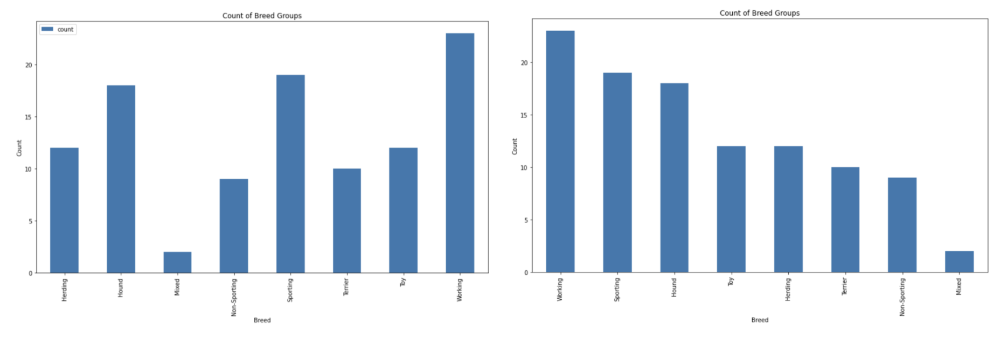
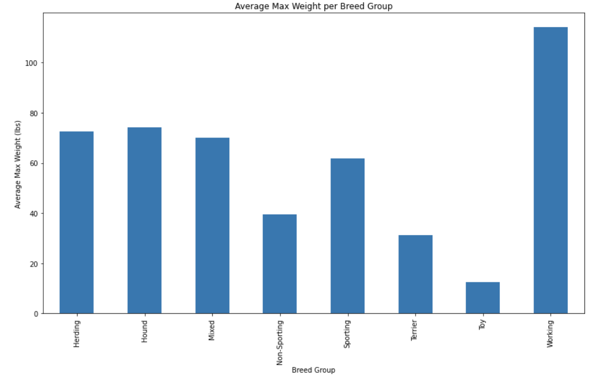
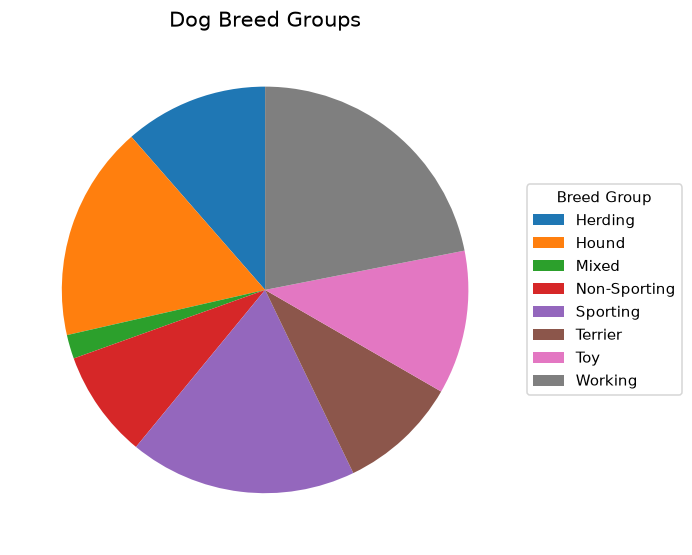
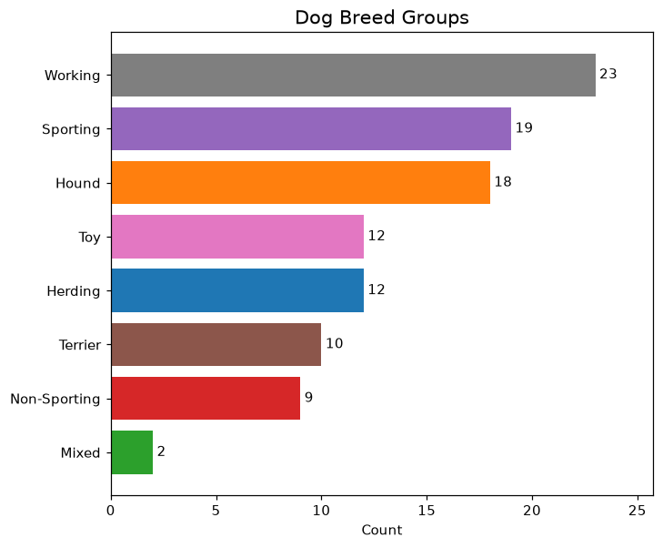
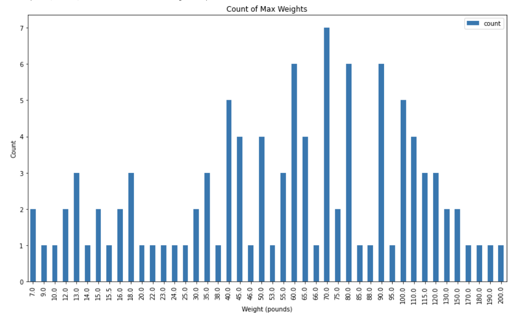

Lesson 4 - One Column at a Time: Bar Charts and Histograms
At the end of this lesson, you will be able to:
- Create bar charts to visualize one column of data, and explain why a bar chart is usually easier to read than a pie chart.
- Create a histogram to visualize numeric data when a bar chart would be hard to read.
- Explain how the number of bins in a histogram can hide or reveal patterns.
- Explain the difference between the mean and the median, and when they disagree.
Bar chart
Let's start with the chart you've probably seen more than any other: the bar chart. Take a look at Figure 8.7 below. Which of these questions do you think it can answer?
- What maximum life span shows up most often in this dataset?
- About what percentage of the breeds have a maximum life span from 12 through 14 years?
- What is the fluffiest breed of dog?
- What is the lowest maximum life span in the dataset?
- How long will my dog live?
- What is the longest maximum lifespan of a cat?
Show Solution
Questions 1, 2, and 4 can be answered with the graph. (The chart has nothing to say about fluffiness, your dog in particular, or cats!)
- The most common maximum life span in this dataset is 15 years. Look for the tallest bar, which sits at 15 on the x-axis, and then read across to the y-axis: a count of 25 breeds.
- If you add up all the counts you get 105, because there are 105 breeds in the dataset. Add up just the bars for 12, 13, and 14 years and you get 22 + 13 + 23 = 58. Then divide 58 by 105 to get the percentage: 58 / 105 = .5524, or about 55%.
- The lowest maximum life span is 8 years. (And the highest is 20.)

One thing to keep in mind with all of these: that 55% is a percentage of breeds, and every breed counts once. A breed with a few hundred dogs in the whole country and a breed with millions both get one row, so this can't tell you what fraction of all the pet dogs out there live 12 to 14 years.
| Max Life Span (years) | Breed records |
|---|---|
| 8 | 2 |
| 9 | 0 |
| 10 | 8 |
| 11 | 2 |
| 12 | 22 |
| 13 | 13 |
| 14 | 23 |
| 15 | 25 |
| 16 | 6 |
| 17 | 1 |
| 18 | 2 |
| 19 | 0 |
| 20 | 1 |
Information from bar charts
All the bar charts so far are count charts: each bar counts how many rows have a particular value in one column. (Later in this lesson we'll see a bar chart that does something a little different.) When you're reading a count chart, these are good questions to ask:
- What value(s) are most common in this column?
- What value(s) are least common in this column?
- What is the unique list of values in this column?
Max Life Span
Now it's your turn. Open this Colab notebook, make a copy, and run each code cell in order from top to bottom to draw the bar chart. If the data-loading cell uses a web link, just run it. If your copy asks you to upload a file instead, download dogs.csv, upload it to Colab, and carry on from the loading cell.
What questions does the chart in the notebook answer? Try to answer them with actual numbers: counts, percentages, ranges, and the units that go with them (years, pounds, &c.).
Show Solution
Here are a few examples:
- 25 dog breeds have a maximum life span of 15 years.
- The lowest maximum life span in the dataset is 8 years.
- 25/105, or about 24%, of the breeds have a maximum life span of 15 years.
- 83/105, or about 79%, of the breeds have a maximum life span between 12 and 15 years.
See how every one of these uses an actual number? That's the habit to build. Instead of "It looks like not very many breeds live to 15," which doesn't tell your reader much of anything, try "About 24% of the breeds have a maximum life span of 15 years."
Breed Group
Now swap the column from 'Max Life Span' to 'Breed Group', change the labels to match, and run it again. What questions does this new chart answer? Same as before: answer with numbers.
Show Solution
Here are a few examples:
- About 10% of the breeds in this dataset are Terriers (10 out of 105).
- Working is the biggest group in this dataset.
- Mixed is the smallest group, with only 2 breeds.
Sorting order
Here are two versions of the breed-group chart. Which one do you like better, and why?

Either order can be right, depending on what you're asking. If you're looking up one particular group, alphabetical order helps you find it. But the one on the right makes comparing easier, because it's sorted by count, biggest first, so the largest and smallest groups jump right out at you.
In the notebook, the bar order is controlled by the order= argument inside sns.countplot(). You can change how the bars are sorted by changing just that one argument:
- To sort by the category name (alphabetical):
order=sorted(df['Breed Group'].dropna().unique()) - To sort by count, tallest bar first:
order=df['Breed Group'].value_counts().index
Try switching between the two, run the cell again, and watch the bars rearrange themselves.
Calculating the sum or average of a column
Here's the bar chart that does something a little different. Instead of counting rows, a bar chart can use two columns: one to split the data into groups, and a numerical column to calculate something for each group, like a total or an average (also called the mean). Say we want to know the average maximum weight of the breeds in each group:

Open this Colab notebook to see the code that makes the chart above. Make a copy, and then change the column name to find the averages of other columns. (And remember to change the labels to match!)
What about pie charts?
You've almost certainly seen a pie chart, a circle sliced up so that each slice is one category, and the size of the slice shows how big that category is. They're everywhere, and at first glance a pie seems like a natural fit for breed groups, since each slice can be one group and together they make up the whole dataset. So let's try it! Here are the exact same breed-group counts you just saw, drawn as a pie:

Try it: Using only the pie chart above, put the breed groups in order from largest to smallest. Which group is the biggest? Which is the smallest? And can you tell which two groups are exactly tied?
Show Solution
The largest slice (Working) and the smallest (Mixed) are fairly clear, but the middle turns into a guessing game. Is Sporting bigger than Hound, or the other way around? Two of the groups are exactly tied, and the pie makes that really hard to see. That's because a pie asks your eyes to compare angles and areas, and people are just bad at that. We're much better at comparing lengths that are lined up next to each other.
Now look at the same data as a bar chart:

Now you can compare them directly. Working (23) is the largest group and Mixed (2) is the smallest, and you can see that Toy and Herding are tied at 12 each. A bar chart lines every value up against the same axis, so you're comparing lengths instead of angles.
So why are pie charts everywhere if they're this hard to read? Partly habit, and partly because they do one thing well: they make it obvious that the slices add up to a whole. But most of the questions we ask about categories are about comparing them (which is largest, which is smallest, how do these two compare?), and those are all easier against a shared axis. So when you're tempted by a pie chart, try drawing the same numbers as a bar chart too, and see which one makes your answer easier to see. Personally, I almost always end up keeping the bars.
Before we move on, try one more thing. Change the column in the original bar chart notebook to 'Max Weight'. Is that an easy chart to read? (Hint: there are a lot of different weights.) The second half of this lesson is about what to do when a column has too many different values for a bar chart to handle.

Histograms
A histogram is the bar chart's close cousin, with one important difference: before anything gets counted, the numbers get grouped into ranges called bins. That's the fix for the too-many-bars problem you just ran into. Instead of one bar for every single weight, you get one bar for each range of weights, and you get to decide how many ranges there are. (The white space between the bars is only there to make it easier to read. It doesn't mean there's a gap in the data.) Look at the two charts below. What's different about them? Which one is more useful?

The labels on the screenshots are rounded. If you want the exact bins, they're in the tables below. Each bin is the same width, running from the lightest breed (7 lbs) to the heaviest (200 lbs). A weight that lands exactly on a boundary goes into the bin that starts there, and only the very last bin includes its top number.
| Weight interval (lbs) | Breed records |
|---|---|
| 7 ≤ weight < 45.6 | 38 |
| 45.6 ≤ weight < 84.2 | 35 |
| 84.2 ≤ weight < 122.8 | 24 |
| 122.8 ≤ weight < 161.4 | 4 |
| 161.4 ≤ weight ≤ 200 | 4 |
| Weight interval (lbs) | Breed records |
|---|---|
| 7 ≤ weight < 26.3 | 23 |
| 26.3 ≤ weight < 45.6 | 15 |
| 45.6 ≤ weight < 64.9 | 15 |
| 64.9 ≤ weight < 84.2 | 20 |
| 84.2 ≤ weight < 103.5 | 14 |
| 103.5 ≤ weight < 122.8 | 10 |
| 122.8 ≤ weight < 142.1 | 2 |
| 142.1 ≤ weight < 161.4 | 2 |
| 161.4 ≤ weight < 180.7 | 2 |
| 180.7 ≤ weight ≤ 200 | 2 |
The histogram on the left splits the data into 5 bins, so weights of 47, 50, 77, and 81 all land in the same bar, the one running from 45.6 lbs up to, but not including, 84.2 lbs. Once they're in a bin, the chart forgets the individual numbers: a 47-pound breed and an 81-pound breed count exactly the same, as one more unit of height on that bar. That's the deal a histogram makes. You give up the details of each value, and in exchange you get to see the overall shape of the data at a glance.
Now look at the chart on the right, with 10 bins. Each bar from the left chart has been split in two, and something shows up that wasn't visible before. With 5 bins, the data looks like it just slopes downhill from small dogs to big ones. With 10, it looks more like two humps: lots of little dogs (23 breeds under about 26 pounds), a dip, and then another cluster of medium-large dogs (20 breeds from about 65 to 84 pounds).
Same data, same code, one number changed, and the chart tells a somewhat different story! So remember that the number of bins is a choice somebody made, and a different choice could have hidden those two humps, or shown you something else entirely. Now try these questions:
- Why do you think 5 bins was chosen for this chart?
- What is the most common range of maximum weights for dog breeds?
- What is the least common range of maximum weights for dog breeds?
Show Solution
- 5 bins gives a clean overall picture: most breeds are under about 120 pounds, and very few are heavier. It's simple to read, which is a good reason to choose it. But it isn't the whole story. The 10-bin chart shows two separate clusters (one from 7 to just under 26.3 pounds, and another from 64.9 to just under 84.2) that 5 bins smooths over. Neither chart is wrong; they just answer slightly different questions.
- In the 5-bin chart, the most common range is 7 to just under 45.6 pounds, with 38 breeds.
- In the 5-bin chart, two ranges tie for the lowest count: 122.8 to just under 161.4 pounds, and 161.4 through 200 pounds. Each one has 4 breeds.
Information from histograms
So histograms need numeric data (you can't make a range out of "Herding" and "Toy"), and they're most useful when a plain bar chart would have too many different values to read. A histogram can tell you:
- Which ranges of values are most common in this column?
- Which ranges of values are least common?
- Are there ranges where no values show up at all?
Max Weight histogram
Open this Colab notebook and make a copy. Play with the number of bins and watch what happens. With too few bins, everything blurs into one lump, and with too many it turns back into the unreadable bar chart. There's no single correct number, but it's a good sign when the shape stops changing much as you nudge the number up or down by one or two. Then make a histogram for another column in the "Dogs" table, pick a number of bins that shows you something interesting, and answer the questions in the notebook.
Mean or median?
Histograms are great at showing the shape of a column, and the shape tells you which "typical value" to report. There are two common ones. The mean is the average you already know: add everything up and divide by how many there are. The median is the middle value: line everything up from smallest to largest and take the one in the middle (or the average of the two middle ones, if there's an even number of values).
For the dog data's Max Weight column, the mean is about 66.3 pounds and the median is 60 pounds. Why are they different? Look at the histogram again. Most breeds are bunched toward the low end, with a long, thin tail of giant breeds stretching out to the right, all the way to the 200-pound Boerboel. Those few huge values drag the mean upward, but they barely affect the median, which only cares about what's in the middle. Try it: take out the five heaviest breeds and the mean drops to about 60.7 pounds, while the median stays exactly at 60.
This comes up all the time with environmental data. Here's an invented but realistic example: the daily air-quality index (AQI) for one summer month in a city near wildfire country. Most days are clean, with readings between 19 and 45. But three days of wildfire smoke come in at 180, 210, and 240, which are unhealthy to very unhealthy levels. For the whole month, the mean comes out to about 47, while the median is 29.
Which number is right? Both! The median tells you what a typical day was like: mostly clean. The mean gets pulled up by the smoke days, hinting that something unusual happened. But neither one tells you the most important thing about that month: three days when it wasn't safe to breathe outside for long. A histogram shows that right away, as a little cluster of bars way out on the right. So what should you report for a month like that? The median is the better answer to "what was a typical day like?", but if you stop there you've left out the three smoke days, and those are the days anyone with asthma is going to remember.
Coming up next: Two Columns at a Time looks at charts that compare two columns at once: scatter plots and crosstabs.